Although Calcutta's official birthday is August 24, 1690, the city's environs date back nearly two thousand years, when Tamralipti — now Tamluk — was a thriving port of the Gupta Empire, trading with all of South East Asia. Tamralipti was the starting point of the southwestern silk route that passed through Bengal, Assam and Burma before ending in the Yunnan province of China.
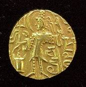
After the decline of the Gupta Empire, Bengal was ruled successively by the Pala and Sena dynasties. Tamralipti declined after Bengal fell to the Sultanate of Delhi in the twelfth century. By the sixteenth century Tamralipti was subject to excessive silting and the new traders from Europe began seeking other sites.
In 1537, the Portuguese sailed up the Ganges to establish their settlement at Satgaon. In 1580, they moved to Bandel de Hooghly. Emperor Shah Jehan attacked and destroyed it in 1632. The Church of Our Lady of Happy Voyage — already a pilgrimage site for Christians, Hindus and Muslims alike — survived and is now a Basilica, a major centre of Roman Catholicism in South East Asia.
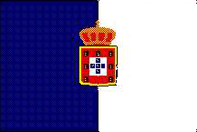
In 1625, the Dutch East India Company (Jan Companie) established a settlement at Chinsurah to trade in opium, saltpeter, muslin and spices. They built Fort Gustavius and several other buildings. The Dutch settlement survived until 1825, when the Dutch ceded Chinsurah to the English in lieu of the island of Sumatra.
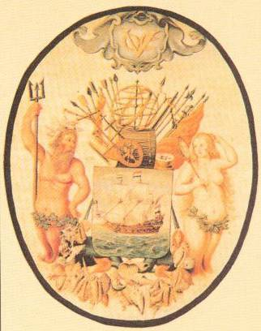
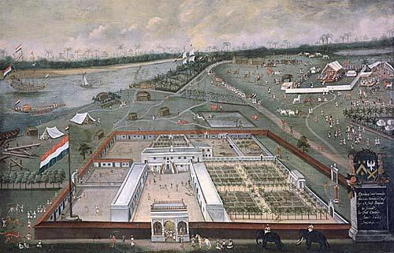
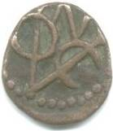
The French established their colony at Chandernagor in 1673. Chandernagor remained a French colony until 1949 when a referendum led to its merger with the Republic of India — the French aura remains to this day. A gate with the motto Liberté, Égalité, Fraternité marks the entrance to the former French Establishment. Behind the Administrateur's residence stands the Église du Sacré Coeur, reminiscent of French village churches.
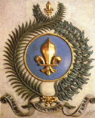
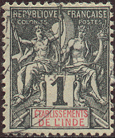
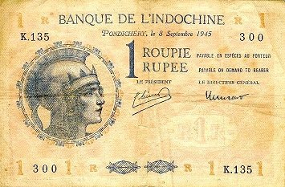
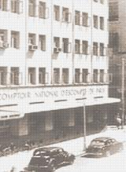
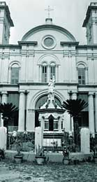
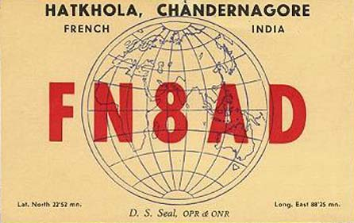
The Danish East India Company established a colony called Fredericknagore near Serampore in 1699. In 1799, Reverend William Carey established the first printing press in Asia at Serampore, and in 1819 the Serampore College — the first institution of western higher education in Asia. Denmark ceded Serampore to Britain in 1845.
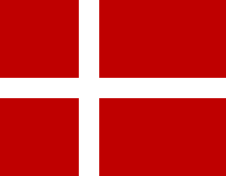
Armenians settled as traders in Chinsurah in the sixteenth century. They funded the English East India Company to build Calcutta and moved to the city where they continue to live to this day. Greeks established a colony in Rishra, Prussians in Bhadreshwar, Belgians at Banquibazar. With the rapid development of Calcutta, these colonies wound up and their residents moved to the city and continued to contribute to its growth.